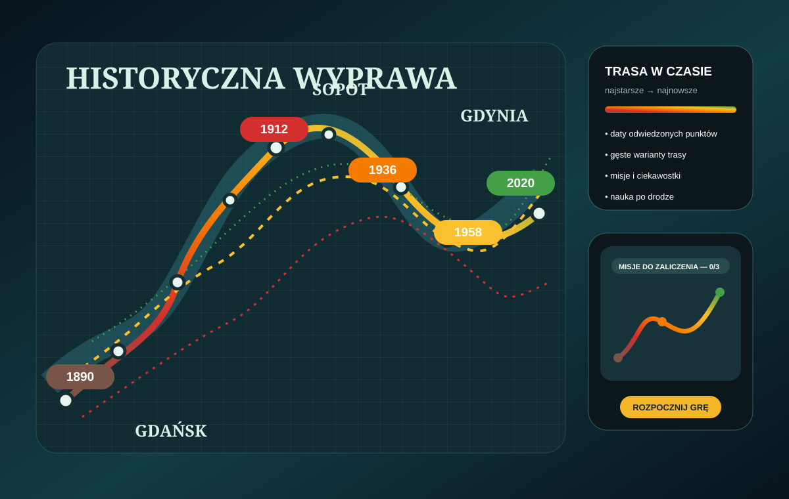

Wybierz kierunek wycieczki, następnie punkt A lub B i zaliczaj kolejne misje.
Pomocna może być wyszukiwarka na miastonamapie.racibo.pl oraz oznaczenia 🔥 bliżej / ❄️ dalej.
Przygotowanie trasy może potrwać około 10 sekund.